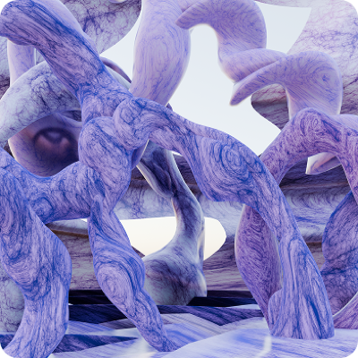
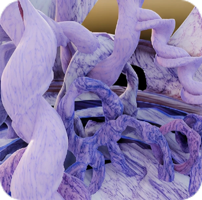
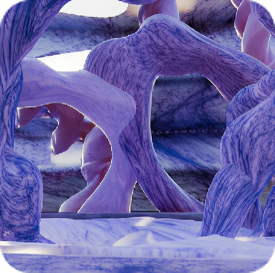
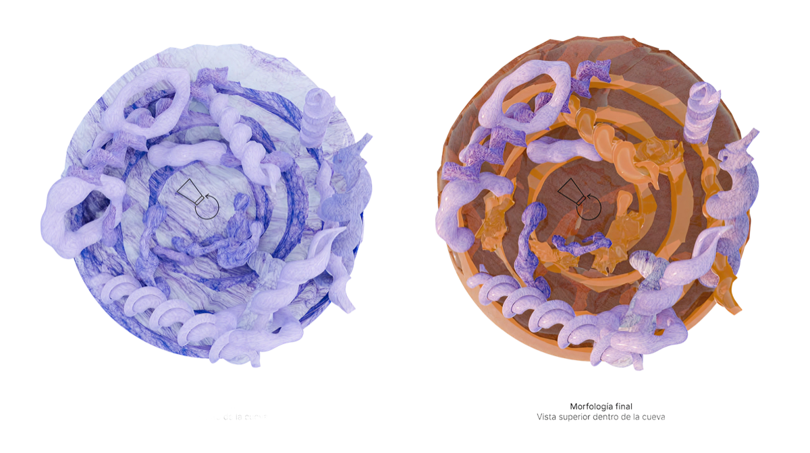
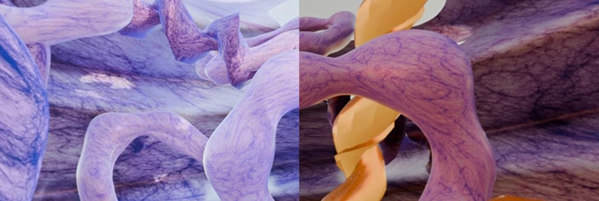

Efímera solidez - Realidad virtual
Herramientas: Adobe Illustrator Blender After Effects
3 año - Laboratorio de diseño 6



Ver video
Este proyecto de realidad virtual propone una experiencia inmersiva dentro de una cueva orgánica donde la materia se transforma a lo largo de un ciclo solar. El concepto surge a partir del análisis del sonido, identificando una dualidad entre lo rígido y lo viscoso que nos llevó a tomar como inspiración el caracol, combinando caparazón y babosa.
A nivel formal, desarrollamos en Blender estructuras envolventes basadas en la espiral del caracol y abrimos cortes en la cueva para permitir el ingreso de luz natural.
Las materialidades acompañan esta idea: comenzamos con un material frío, marmolado y rígido en tonos violetas, rosas y azules, que luego muta hacia uno cálido, translúcido y viscoso en naranjas y amarillos.
La animación del derretimiento se trabajó mediante shape keys, modelando distintas etapas de transformación y animándolas progresivamente.
Finalmente, la luz fue animada siguiendo el recorrido real del sol —6 am, 12 pm y 6 pm— reforzando la transición entre frío y calor.
El resultado es una experiencia de 32 segundos que explora la tensión entre solidez y fluidez, sintetizando la idea de una “efímera solidez”.
